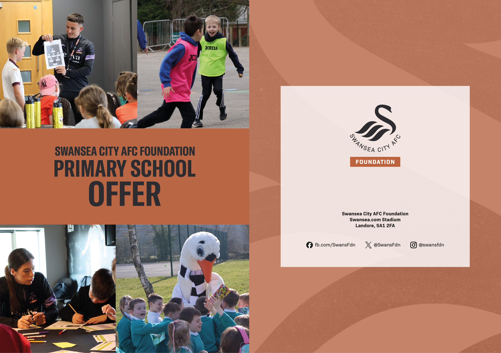
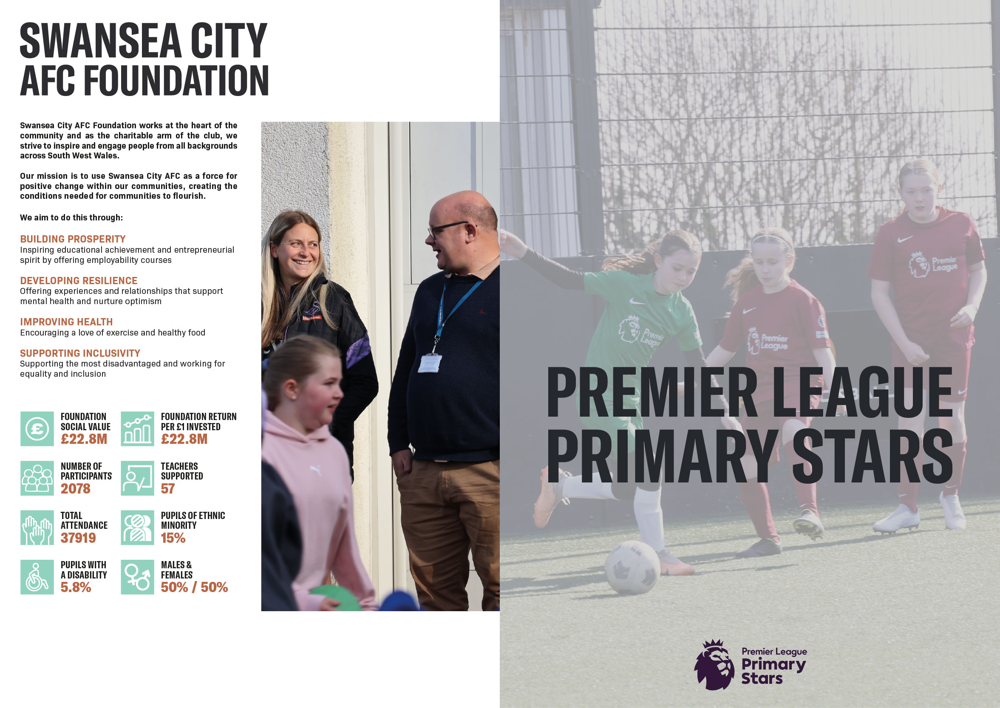
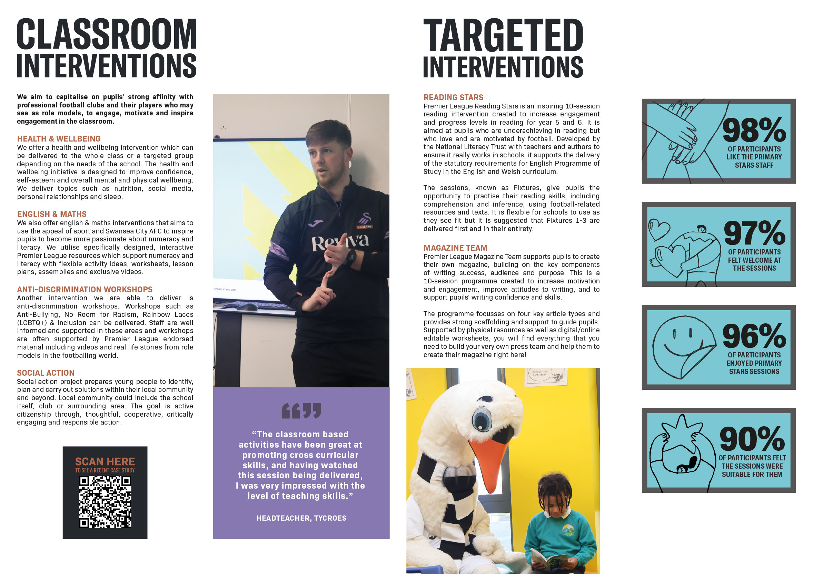
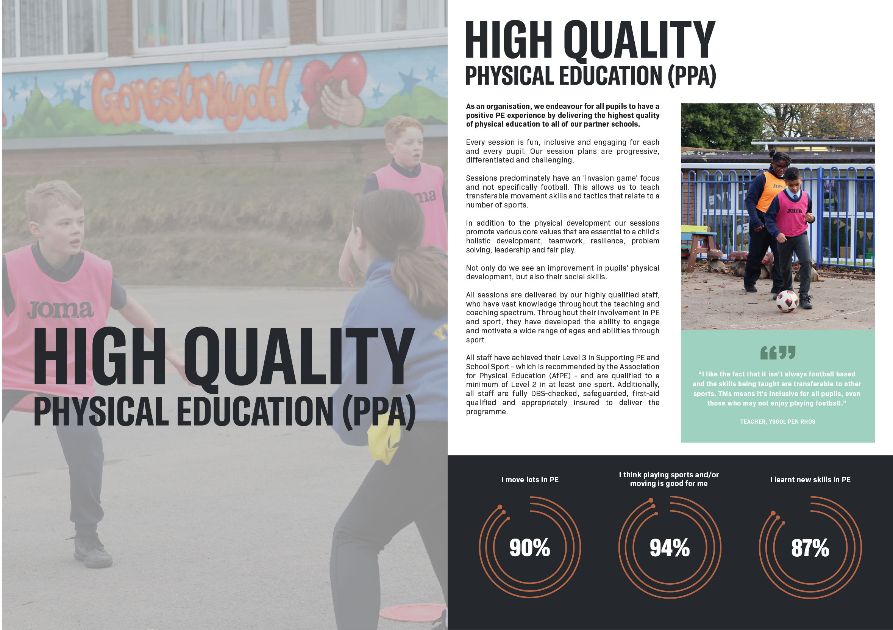

Primary Stars Booklet
Promotional booklet for Premier League Primary Stars delivered by Swansea Foundation, which uses football to boost physical activity and classroom learning.
Using select typography, imagery and data visualisations to promote what the programme offers and the difference it makes.
Designed in line with the brand guidelines, with a clear layout that keeps every page easy to read.

images/primary-stars-booklet/01.jpg

images/primary-stars-booklet/02.jpg

images/primary-stars-booklet/03.jpg

images/primary-stars-booklet/04.jpg